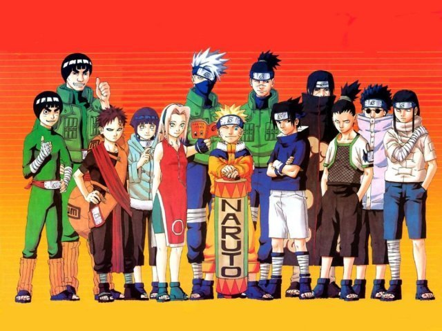

O mundo do Naruto
Está chegando o mundo ninja em sua casa
Aceita este desafio?
Entre no mundo mágico da vila Oculta da Folha
Atualizado em 15/03/2020
O que é ...
País do Fogo
Vila Oculta: Konohagakure (Vila Oculta da Folha). Líder shinobi: Hokage. Jinchūriki: Kurama (A besta de nove caudas). Um dos países mais poderosos do mundo e o lar dos personagens principais de Naruto.Confira mais neste site especializado neste assunto

Da infancia ate a fase adulta do Naruto
Fase a fase do Classico ao Shippuden
Evolução do Naruto - Todos os níveis do seu poder
Naruto (ナルト?) é uma série de mangá escrita e ilustrada por Masashi Kishimoto, que conta a história de Naruto Uzumaki, um jovem ninja que constantemente procura por reconhecimento e sonha em se tornar Hokage, o ninja líder de sua vila. A história é dividida em duas partes, a primeira parte se passa nos anos da pré-adolescência de Naruto, e a segunda parte se passa em sua adolescência. A série é baseada em dois mangás one-shots de Kishimoto: Karakuri (1995), e que por causa dele Kishimoto ganhou uma menção honrosa no prêmio Hop Step da Shueisha no ano seguinte, e Naruto (1997). A editora Panini Comics licenciou e publicou o mangá em três versões no Brasil, e em Portugal é a editora Devir Manga quem licencia e publica o mangá. A história de Naruto continua com o seu filho, Boruto Uzumaki em Boruto: Naruto Next Generations.